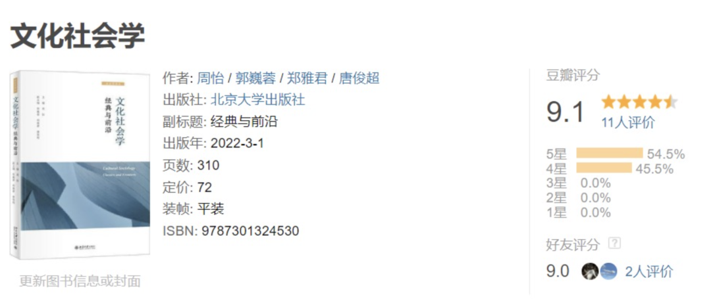

讲座预告|不止布迪厄：文化社会学作为一种研究视角（社会理论青年说第13期）
收录于合集
“社会理论青年说”是面向公众、免费参与、在线直播的月度系列讲座，由海内外青年研究人员和博士生主讲，以交流与推广社会学理论为主旨，由Sociological理论大缸于2021年1月创办。2022年改为双月度。
本次是第13讲，时间是2022年4月9号（周六）上午9-11时（北京时间）
未经主讲老师许可
请勿录屏和公开
讲座题目
不止布迪厄：文化社会学作为一种研究视角
分享主题
相信许多读者的文化社会学入门是从布迪厄开始的，其理论诸如文化资本、象征暴力、惯习、场域都对文化社会学有深远的影响。
与此同时，除了布迪厄以外，还有许多文化社会学的传统，来源于 认知心理学和象征互动论等等 。
文化社会学不是一套单一的理论，而是一种 多元的研究视角 ，可以被应用于各种社会现象，而不只是“文化”本身。此讲将从不同学者如何定义和分类文化出发，接着探讨不同理论如何处理文化与社会的关系，最后介绍最新的实证研究和文化社会学在 中国的发展 。
讲座材料
Xu B, Qian L, Guo W. 2019. The cultural sociology of China: trajectory and dynamics of a burgeoning field. Cultural Sociology 13(4):387-410.
周怡等主编，2022，《文化社会学：经典与前沿》，北京大学出版社。

分享人
郭巍蓉
•美国埃默里大学社会学博士候选人
•复旦大学社会学本科、硕士
•研究领域为文化社会学、政治社会学、社会心理学
•论文发表于《文化社会学》（Cultural Sociology）、《社会心理学季刊》（Social Psychology Quarterly）；《文化社会学：经典与前沿》副主编
主持人
郑雅君
•香港大学教育学院在读博士生
•本科、硕士分别毕业于复旦大学社会学系与复旦大学高等教育研究所
•主要研究方向为文化社会学视野下的教育公平与学生发展。
•曾两度获得中国社会学会颁发的“学术年会优秀论文二等奖”（2014、2015）
•获首届全国教育实证研究论坛优秀学位论文奖（2017）
•博士论文获香港田家炳教育基金资助。即将出版著作《“上大学”是一种技艺：名校生出路分化之谜》。
分享时间与直播方式
2022年4月9日周六9-11时（北京时间）
考虑到时差原因，敬请谅解本次在上午举办
腾讯会议：427-737-547
会议密码：0409
B站“社会学理论大缸”同步直播。如腾讯会议，敬请移步。
未经主讲老师许可
请勿录屏和公开
“社会理论青年说”是面向公众、免费参与、在线直播的月度系列讲座，由海内外青年研究人员和博士生主讲，以交流与推广社会学理论为主旨，由Sociological理论大缸于2021年1月创办。2022年改为双月度。
2021年回顾| 12个月12场《社会理论青年说》公益讲座
第1讲（2021年1月）是由华中师范大学社会学院李钧鹏教授分享的《战争社会学初探》；
第2讲（2021年2月）是由芝加哥大学社会学博士生杨宇辰同学分享的《社会学如何研究男性气质？前沿与问题》；
第3讲（2021年3月）是由南京大学社会学教授郑作彧老师分享的《我们这个颠倒的世界：现代社会的时空缩胀》；
第4讲（2021年4月）是由哥伦比亚大学社会学博士生付正同学分享的《聊聊政治社会学的文化转向》。
第5讲（2021年5月）是由日本御茶女子大学研究员李亚姣老师分享的《浅谈马克思主义女权的路径：从“妇女回家”到“上野千鹤子热”》。
第6讲（2021年6月）是由浙江大学社会学系“百人计划”研究员李昂然老师分享的《鸡娃之困？社会学视野下家庭教育的理性思考》。
第7讲（2021年7月）是由荷兰格罗宁根大学媒介研究与新闻系助理教授林健老师分享的《网红经济：文化与平台逻辑》。
第8讲（2021年8月）是由东南大学人文学院博士后吴心越老师分享的《照料劳动的社会学：性别、阶层与亲密关系》。
第9讲（2021年9月）是由威斯康星大学麦迪逊分校博士生傅思颖同学分享的《往古者，所以知今也：浅谈历史社会学》。
第10讲（2021年10月）是由威斯康星大学麦迪逊分校博士生禹昂同学分享的《社科研究中的因果推断：为何重要？如何使用》。
第11讲（2021年11月）是由巴黎-萨克雷高师社会学博士生戴定皇同学分享的《又是布迪厄？比较法国与英美世界的传承与发展》
第12讲（2021年12月）由哥伦比亚大学、威斯康星大学和清华大学博士生付正、傅思颖和孙梦婷分享《为什么叫我女博士？》。
社会学理论大缸另有举办“国际社会理论名家系列活动”是“社会理论青年说”的姐妹篇。该活动面向公众、免费参与、在线直播的半年度系列讲座，邀请海内外社会理论著名学者，以访谈形式为主，旨在深化理论探索、拓展思想边界，今后再邀请来自英国批判实在论、德国批判理论等领域名家分享。
该活动已办第1讲，为2022年2月26号在线访谈了国际社会学原副会长、柏林洪堡大学教授、《社会理论二十讲》作者汉斯·约阿斯。
本文原载于“社会学理论大纲”
编辑：韩丽嵘